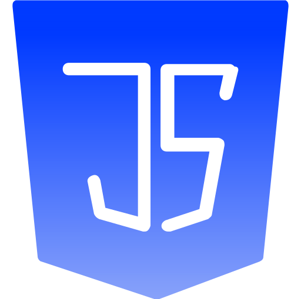
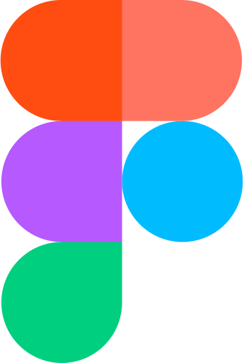

profiel
Mijn naam is Alon en ik volg de BOL-opleiding
Software Developer aan ROC Midden Nederland.
Ik heb interesse in webdesign en
webontwikkeling en werk graag aan het
ontwikkelen van moderne en gebruiksvriendelijke
websites. Via mijn portfolio laat ik mijn projecten,
vaardigheden en ontwikkeling als
softwareontwikkelaar zien.
vaardigheden

html
Het structureren en opbouwen van
overzichtelijke en
gebruiksvriendelijke webpagina’s.

css
Het ontwerpen en stylen van
moderne websites met oog voor detail.

javascript
Het toevoegen van
interactieve functies en dynamische
elementen aan websites.
php
Het ontwikkelen van dynamische
websites en het verwerken van
gegevens aan de serverzijde.

figma
Het ontwerpen en uitwerken van
website- en applicatieontwerpen.